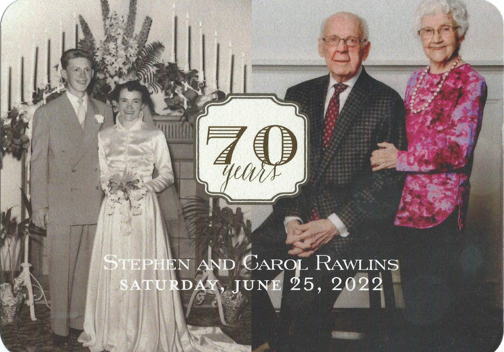

Three days from now we will celebrate the the most important birth in history some 2000 years ago to Mary and Joseph in Bethlehem.
But for me the the birth of the second most important person in my life occurred 91 years ago on this day to Clyde and Elva Carter in Orem, Utah.
Her name is Carol Jean.
Three months and twenty days ago she passed through the veil to return to her Heavenly Father.
It was her time to go but not my time to let her go.
She has left huge hole in my heart.
I want to tell you some things about this beautiful feisty woman.
She was quiet but tough.
She had a very clear sense how she should live her life and once she made up her mind to do something she did it regardless of circumstances.
Her son, David said of her
“she had an unwavering belief in our potential to do whatever we set our mind to. I know her belief in me made a difference in my life.”
And her belief in me made all the difference in my life and I’d like to tell you about it.
I had grown up on a small farm in Washington state and had not taken college preparation courses in a high school but instead had taken courses to prepare me to go back to the farm.
Following graduation I was working for a farmer harvesting sugar beets when the weather turned cold and froze the beets in the ground. Two of my friends returned from BYU for Christmas break and told me how nice it was at BYU.
I decided I’d had enough trying to dig frozen beets out of the ground and put my clothes into a cardboard box and took a Greyhound bus to Provo.
I didn’t plan to stay in school but thought that a few agriculture classes couldn’t hurt.
I just wanted to get out of the cold.
It turned out that my two friends were renting rooms in Carol’s home In Provo and they introduced me to her.
At BYU of course I signed up for agriculture classes and Dr. Thomas Martin was my advisor.
At the end of the quarter I was in his microbiology class and at the end of it he said
“Mr. Rawlins I would like to see you in my office”.
Being very shy and insecure I entered with trepidation wondering what I had done.
He said to me
“Mr Rawlins I’ve been observing your work and next quarter I don’t think you should take any more agriculture classes. You can learn all that by reading books. I think you should take Math, Physics and Chemistry classes and go on and get your PhD”.
I was completely shocked. This was the furthest thing from my mind.
By this time Carol and I were seeing each other occasionally and when I told her of this preposterous suggestion and that I thought Dr. Martin was out of his mind she did did not agree.
She had worked as a secretary for him and was aware of his success in helping students obtain advanced degrees.
She simply said
“of course you should do it. You can accomplish anything so set your mind to do”.
And she never wavered from her belief in my potential.
When the PhD diploma was issued it had my name on it but she was responsible for a huge part of it.
As I have looked back I realize that without the confidence I had gained from Carol’s belief in me there would have been no PhD.
I would not have returned to school and would have simply returned home and got some kind of a job. With my limited resources there is no question that I would not have been a successful farmer but would have probably ended up as a farm worker as many in my family had been.
What a special woman she is.
I literally owe my life to her.
And it’s impossible to know how many lives like mine have been changed by her example of personal courage and an unwavering belief in their potential.
What a blessing she has been to all us that have had the privilege of having her in our lives.
Our last six months living in a senior living center have been wonderful.
With no external distractions and relatively good health we have spent all of our time doing things together and have grown very close.
When Carol returned from rehab for her hip surgery where I could not spend the night we were so pleased to be able to be together.
On the morning a day before she died she rolled over and laid her head on my shoulder and said to me
“I love you Stephen. We are a team. We are tough cookies and together we can handle anything life brings our way”.
And with Carol’s example of strength and courage and the help and guidance of our Lord I know I will be able to handle whatever life brings to me including this temporary separation from her.
Steve Rawlins
